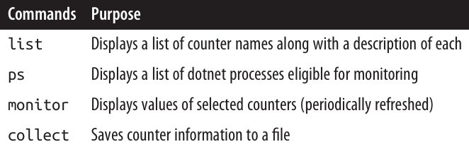
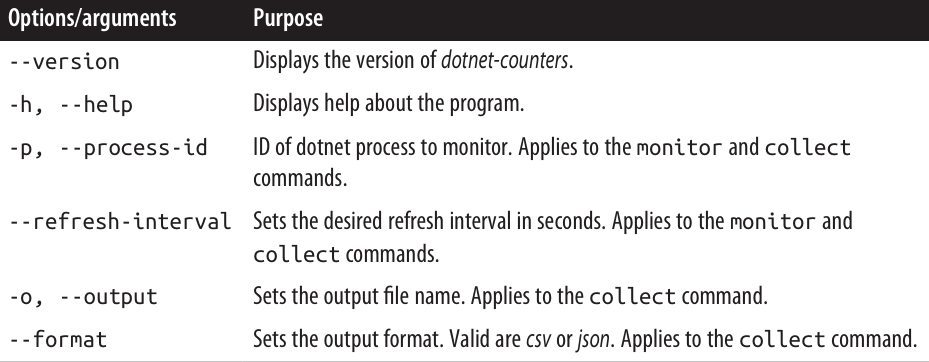
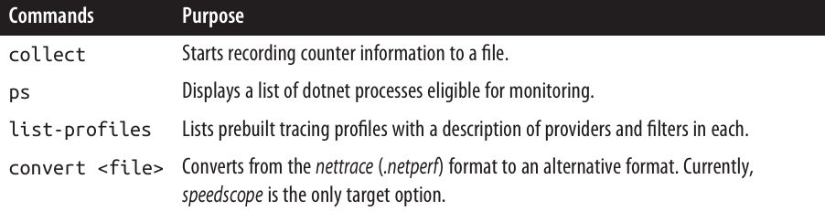

فصل سیزدهم: تشخیص (Diagnostics)
وقتی چیزی اشتباه پیش میرود، خیلی مهم است که اطلاعات لازم برای کمک به تشخیص (diagnosing) مشکل در دسترس باشد. یک محیط توسعه یکپارچه (Integrated Development Environment – IDE) یا یک دیباگر (debugger) میتواند در این زمینه بسیار کمککننده باشد—اما معمولاً فقط در طول توسعه موجود است.
پس از انتشار (ship) یک برنامه، خودِ برنامه باید اطلاعات تشخیصی را جمعآوری و ثبت کند. برای برآورده کردن این نیاز، .NET مجموعهای از امکانات را فراهم میکند تا بتوان اطلاعات تشخیصی را لاگگیری کرد، رفتار برنامه را مانیتور کرد، خطاهای زمان اجرا را شناسایی کرد و در صورت موجود بودن، با ابزارهای دیباگ یکپارچه شد.
برخی ابزارها و APIهای تشخیصی، مخصوص Windows هستند زیرا به قابلیتهای سیستمعامل ویندوز وابستهاند. برای جلوگیری از شلوغ شدن BCL (.NET Base Class Library) با APIهای مختص پلتفرم، مایکروسافت آنها را در پکیجهای جداگانهی NuGet عرضه کرده است که میتوانید به صورت اختیاری به آنها ارجاع دهید. بیش از دوازده پکیج مخصوص ویندوز وجود دارد که میتوانید همهی آنها را یکجا با پکیج اصلی Microsoft.Windows.Compatibility استفاده کنید.
انواع (types) معرفیشده در این فصل، عمدتاً در namespace به نام System.Diagnostics تعریف شدهاند.
کامپایل شرطی (Conditional Compilation)
شما میتوانید هر بخش از کد در C# را با استفاده از دستورات پیشپردازنده (preprocessor directives) به صورت شرطی کامپایل کنید.
این دستورات، دستورالعملهای خاصی برای کامپایلر هستند که با نماد # شروع میشوند (و برخلاف سایر ساختارهای C#، باید در یک خط جداگانه قرار گیرند). از نظر منطقی، این دستورات قبل از انجام کامپایل اصلی اجرا میشوند (هرچند در عمل، کامپایلر آنها را در مرحلهی lexical parsing پردازش میکند).
دستورات پیشپردازنده برای کامپایل شرطی عبارتاند از:
#if#else#endif#elif
دستور #if به کامپایلر میگوید بخشی از کد را نادیده بگیرد مگر اینکه یک symbol مشخص تعریف شده باشد.
میتوانید یک symbol را به دو روش تعریف کنید:
- در سورسکد با استفاده از دستور
#define(که فقط به همان فایل اعمال میشود). - در فایل .csproj با استفاده از عنصر
<DefineConstants>(که در این صورت، به کل assembly اعمال میشود).
مثال:
#define TESTMODE
// #define باید در بالای فایل نوشته شود
// طبق قرارداد، نام symbol ها با حروف بزرگ نوشته میشوند.
using System;
class Program
{
static void Main()
{
#if TESTMODE
Console.WriteLine("in test mode!"); // OUTPUT: in test mode!
#endif
}
}
اگر خط اول (یعنی #define TESTMODE) را حذف کنیم، برنامه بدون خط Console.WriteLine کامپایل خواهد شد—انگار که کلاً کامنت شده باشد.
دستور #else مشابه دستور else در C# است و #elif هم معادل #else به همراه یک #if است.
عملگرهای ||, &&, و ! نیز به ترتیب or، and و not عمل میکنند:
#if TESTMODE && !PLAYMODE // اگر TESTMODE فعال باشد و PLAYMODE فعال نباشد
...
#endif
اما یادتان باشد: این یک عبارت معمولی C# نیست و symbolهایی که روی آنها عمل میکنید هیچ ارتباطی به متغیرها—چه استاتیک و چه غیر از آن—ندارند.
تعریف symbolها در سطح assembly
میتوانید symbolهایی را که در تمام فایلهای یک assembly اعمال میشوند، در فایل .csproj تعریف کنید (یا در Visual Studio، از طریق تب Build در پنجرهی Project Properties).
مثال:
<PropertyGroup>
<DefineConstants>TESTMODE;PLAYMODE</DefineConstants>
</PropertyGroup>
اگر یک symbol را در سطح assembly تعریف کرده باشید و بخواهید آن را برای یک فایل خاص لغو (undefine) کنید، میتوانید از دستور #undef استفاده کنید.
کامپایل شرطی در برابر پرچمهای متغیر استاتیک
شما میتوانید همان مثال قبلی را با یک فیلد استاتیک ساده هم پیادهسازی کنید:
static internal bool TestMode = true;
static void Main()
{
if (TestMode) Console.WriteLine("in test mode!");
}
این روش مزیت پیکربندی در زمان اجرا (runtime configuration) را دارد.
پس چرا باید کامپایل شرطی را انتخاب کنیم؟
دلیل این است که کامپایل شرطی میتواند کارهایی انجام دهد که پرچمهای متغیر نمیتوانند، مثل:
- درج شرطی یک attribute
- تغییر نوع اعلانشدهی یک متغیر
- تغییر بین namespaceها یا type aliasها در یک دستور
using
مثال:
using TestType =
#if V2
MyCompany.Widgets.GadgetV2;
#else
MyCompany.Widgets.Gadget;
#endif
شما حتی میتوانید رفکتورینگهای بزرگ را زیر یک دستور کامپایل شرطی قرار دهید، طوری که بتوانید بلافاصله بین نسخهی قدیمی و جدید جابهجا شوید. همچنین میتوانید کتابخانههایی بنویسید که در برابر چند نسخهی مختلف runtime کامپایل شوند و هر جا که امکان دارد، از قابلیتهای جدید بهره ببرند.
یکی دیگر از مزایای کامپایل شرطی این است که کدهای دیباگ میتوانند به انواع (types) در assemblyهایی اشاره کنند که در نسخهی نهایی (deployment) گنجانده نمیشوند.
ویژگی Conditional Attribute
ویژگی Conditional به کامپایلر دستور میدهد که اگر یک symbol مشخص تعریف نشده باشد، هر فراخوانی (call) به یک کلاس یا متد خاص را نادیده بگیرد.
برای دیدن کاربرد این ویژگی، فرض کنید متدی برای ثبت وضعیت (logging status) نوشتهاید:
static void LogStatus (string msg)
{
string logFilePath = ...
System.IO.File.AppendAllText (logFilePath, msg + "\r\n");
}
حالا تصور کنید میخواهید این متد فقط زمانی اجرا شود که symbol به نام LOGGINGMODE تعریف شده باشد.
راهحل اول این است که همهی فراخوانیهای LogStatus را داخل یک دستور #if قرار دهید:
#if LOGGINGMODE
LogStatus("Message Headers: " + GetMsgHeaders());
#endif
این کار نتیجهی ایدهآل میدهد، اما خستهکننده و وقتگیر است.
راهحل دوم این است که دستور #if را داخل خود متد LogStatus قرار دهیم. اما این مشکل دارد؛ چرا که اگر اینطور فراخوانی شود:
LogStatus("Message Headers: " + GetComplexMessageHeaders());
در این حالت، متد GetComplexMessageHeaders همیشه فراخوانی خواهد شد—که ممکن است باعث افت کارایی (performance hit) شود.
ترکیب دو راهحل با Conditional Attribute
میتوانیم عملکرد راهحل اول (نتیجهی مطلوب) و راحتی راهحل دوم را با افزودن ویژگی Conditional (که در System.Diagnostics تعریف شده) به متد LogStatus به دست بیاوریم:
[Conditional("LOGGINGMODE")]
static void LogStatus (string msg)
{
...
}
این کار به کامپایلر دستور میدهد که تمام فراخوانیهای LogStatus را طوری در نظر بگیرد که گویی داخل یک دستور #if LOGGINGMODE قرار دارند.
اگر symbol تعریف نشده باشد، هرگونه فراخوانی به LogStatus کلاً از خروجی نهایی کامپایل حذف خواهد شد—از جمله evaluation آرگومانها.
بنابراین هر عبارتی که اثر جانبی (side effect) داشته باشد نیز کلاً اجرا نمیشود.
این ویژگی حتی زمانی که LogStatus و متد فراخواننده در دو assembly متفاوت باشند نیز به درستی کار میکند.
یک مزیت دیگر
مزیت دیگر [Conditional] این است که بررسی شرط در زمان کامپایل کد فراخواننده انجام میشود، نه در زمان کامپایل متد مقصد. این یعنی شما میتوانید کتابخانهای حاوی متدهایی مثل LogStatus بنویسید و فقط یک نسخه از آن کتابخانه را بسازید.
ویژگی Conditional در زمان اجرا هیچ تأثیری ندارد—این فقط یک دستورالعمل برای کامپایلر است.
جایگزینهای Conditional Attribute
ویژگی Conditional زمانی بیفایده است که بخواهید عملکردی را بهطور پویا (runtime) فعال یا غیرفعال کنید.
در این حالت باید از یک راهحل مبتنی بر متغیر (variable-based) استفاده کنید.
سؤال بعدی این است که چطور میتوانیم از اجرای آرگومانها در هنگام فراخوانی متدهای لاگگیری شرطی جلوگیری کنیم؟
راهحل تابعی (functional approach) این مشکل را برطرف میکند:
using System;
using System.Linq;
class Program
{
public static bool EnableLogging;
static void LogStatus (Func<string> message)
{
string logFilePath = ...
if (EnableLogging)
System.IO.File.AppendAllText (logFilePath, message() + "\r\n");
}
}
با استفاده از lambda expression، میتوانیم این متد را بدون شلوغی اضافی سینتکس فراخوانی کنیم:
LogStatus(() => "Message Headers: " + GetComplexMessageHeaders());
اگر مقدار EnableLogging برابر false باشد، متد GetComplexMessageHeaders هیچوقت اجرا نخواهد شد.
کلاسهای Debug و Trace
کلاسهای استاتیک Debug و Trace قابلیتهای پایهای برای logging و assertion فراهم میکنند.
این دو کلاس بسیار شبیه یکدیگر هستند؛ تفاوت اصلی در هدف استفاده است:
- کلاس Debug برای buildهای دیباگ در نظر گرفته شده است.
- کلاس Trace برای هر دو حالت دیباگ و release طراحی شده است.
برای همین:
- تمام متدهای کلاس
Debugبا[Conditional("DEBUG")]تعریف شدهاند. - تمام متدهای کلاس
Traceبا[Conditional("TRACE")]تعریف شدهاند.
یعنی: تمام فراخوانیهایی که به Debug یا Trace انجام میدهید، توسط کامپایلر حذف میشوند مگر اینکه symbolهای DEBUG یا TRACE تعریف شده باشند.
(در Visual Studio میتوانید این symbolها را از طریق تب Build در پنجرهی Project Properties فعال کنید. در پروژههای جدید، symbol TRACE بهطور پیشفرض فعال است.)
متدهای مهم Debug و Trace
هر دو کلاس Debug و Trace متدهای زیر را ارائه میدهند:
WriteWriteLineWriteIf
این متدها به طور پیشفرض پیامها را به پنجرهی خروجی دیباگر (debugger’s output window) ارسال میکنند:
Debug.Write("Data");
Debug.WriteLine(23 * 34);
int x = 5, y = 3;
Debug.WriteIf(x > y, "x is greater than y");
کلاس Trace علاوه بر اینها، متدهای زیر را هم دارد:
TraceInformationTraceWarningTraceError
تفاوت رفتار این متدها با متدهای Write بستگی به TraceListeners فعال دارد (که در بخش «TraceListener» در بخشهای مرتبط توضیح داده شده است).
Fail و Assert
کلاسهای Debug و Trace هر دو متدهای Fail و Assert را فراهم میکنند.
- متد Fail پیام را به هر TraceListener موجود در مجموعهی Listeners کلاس Debug یا Trace ارسال میکند (بخش بعدی را ببینید). این متد بهطور پیشفرض پیام را در خروجی دیباگر مینویسد:
Debug.Fail("File data.txt does not exist!");
- متد Assert در صورتی که آرگومان بولی آن
falseباشد، متد Fail را فراخوانی میکند. این عمل را assertion مینامند و اگر نقض شود، نشاندهندهی وجود باگ در کد است. مشخص کردن پیام خطا اختیاری است:
Debug.Assert(File.Exists("data.txt"), "File data.txt does not exist!");
var result = ...
Debug.Assert(result != null);
متدهای Write، Fail و Assert همگی overloadهایی دارند که علاوه بر پیام، یک category string هم میپذیرند—چیزی که میتواند در پردازش خروجی مفید باشد.
جایگزین assertion با Exception
یک جایگزین برای assertion این است که وقتی شرط برعکس برقرار بود، یک exception پرتاب کنید.
این روش در هنگام اعتبارسنجی آرگومانهای متد بسیار رایج است:
public void ShowMessage(string message)
{
if (message == null) throw new ArgumentNullException("message");
...
}
اما تفاوتها:
- این نوع «assertion» بدون قید و شرط کامپایل میشود و انعطافپذیری کمتری دارد (چون نتیجهی شکست assertion را نمیتوانید با TraceListeners کنترل کنید).
- از نظر فنی، این اصلاً assertion نیست.
- Assertion نشاندهندهی باگ در کد متد جاری است اگر نقض شود.
- Exception در هنگام اعتبارسنجی آرگومان، نشاندهندهی باگ در کد فراخواننده است.
TraceListener
کلاس Trace یک ویژگی استاتیک به نام Listeners دارد که مجموعهای از نمونههای TraceListener را برمیگرداند. این listenerها مسئول پردازش محتوای خروجی متدهای Write، Fail و Trace هستند.
به طور پیشفرض، مجموعهی Listeners شامل یک listener واحد است: DefaultTraceListener.
این listener پیشفرض دو ویژگی مهم دارد:
- وقتی به دیباگری مثل Visual Studio متصل باشد، پیامها به خروجی دیباگر نوشته میشوند؛ در غیر این صورت، پیامها نادیده گرفته میشوند.
- وقتی متد Fail فراخوانی شود (یا یک assertion شکست بخورد)، برنامه متوقف میشود.
تغییر رفتار TraceListener
میتوانید این رفتار را تغییر دهید؛ به این صورت که listener پیشفرض را حذف کنید و listenerهای دلخواهتان را اضافه کنید.
شما میتوانید:
از ابتدا یک listener بسازید (با زیرکلاسگیری از TraceListener).
یا از یکی از انواع از پیش تعریفشده استفاده کنید:
- TextWriterTraceListener → نوشتن در یک Stream یا TextWriter یا اضافه کردن به یک فایل.
- EventLogTraceListener → نوشتن در Windows Event Log (فقط ویندوز).
- EventProviderTraceListener → نوشتن در زیرسیستم ETW (Event Tracing for Windows) (پشتیبانی چند سکویی).
علاوه بر این، TextWriterTraceListener خود به چند نوع دیگر زیرکلاس شده است:
- ConsoleTraceListener
- DelimitedListTraceListener
- XmlWriterTraceListener
- EventSchemaTraceListener
مثال: افزودن چند Listener
مثال زیر listener پیشفرض Trace را پاک میکند و سپس سه listener اضافه میکند:
- یک listener که به فایل اضافه میکند.
- یک listener که روی کنسول مینویسد.
- یک listener که در Windows Event Log مینویسد.
// پاک کردن listener پیشفرض:
Trace.Listeners.Clear();
// افزودن writer که در فایل trace.txt لاگ مینویسد:
Trace.Listeners.Add(new TextWriterTraceListener("trace.txt"));
// گرفتن خروجی کنسول و افزودن به عنوان listener:
System.IO.TextWriter tw = Console.Out;
Trace.Listeners.Add(new TextWriterTraceListener(tw));
// تنظیم Windows Event Log و افزودن listener
// توجه: CreateEventSource نیازمند دسترسی admin است
if (!EventLog.SourceExists("DemoApp"))
EventLog.CreateEventSource("DemoApp", "Application");
Trace.Listeners.Add(new EventLogTraceListener("DemoApp"));
در مورد Windows Event Log:
- پیامهایی که با Write، Fail یا Assert مینویسید، همیشه به عنوان پیام Information در Event Viewer نمایش داده میشوند.
- پیامهایی که با TraceWarning یا TraceError مینویسید، به ترتیب به صورت warning یا error نمایش داده میشوند.
فیلتر و تنظیمات TraceListener
کلاس TraceListener یک ویژگی به نام Filter (از نوع TraceFilter) دارد که میتوانید برای کنترل نوشتن پیامها روی آن listener استفاده کنید.
برای این کار میتوانید:
- یکی از زیرکلاسهای آمادهی
TraceFilterمثل EventTypeFilter یا SourceFilter را استفاده کنید. - یا یک کلاس سفارشی از
TraceFilterبسازید و متد ShouldTrace را override کنید.
(مثلاً میتوانید پیامها را بر اساس category فیلتر کنید.)
ویژگیهای دیگر TraceListener
- ویژگیهای IndentLevel و IndentSize → برای کنترل تورفتگی (indentation).
- ویژگی TraceOutputOptions → برای نوشتن دادههای اضافه.
مثال:
TextWriterTraceListener tl = new TextWriterTraceListener(Console.Out);
tl.TraceOutputOptions = TraceOptions.DateTime | TraceOptions.Callstack;
Trace.TraceWarning("Orange alert");
خروجی:
DiagTest.vshost.exe Warning: 0 : Orange alert
DateTime=2007-03-08T05:57:13.6250000Z
Callstack= at System.Environment.GetStackTrace(Exception e, Boolean needFileInfo)
at System.Environment.get_StackTrace()
at ...
پاکسازی و بستن Listeners
برخی از listenersها مثل TextWriterTraceListener در نهایت خروجی را درون یک stream مینویسند که تحت cache قرار دارد. این موضوع دو پیامد دارد:
- یک پیام ممکن است بلافاصله در خروجی stream یا فایل ظاهر نشود.
- شما باید قبل از پایان برنامه، listener را ببندید یا حداقل flush کنید؛ در غیر این صورت، آنچه در cache است از دست میرود (بهطور پیشفرض تا ۴ KB اگر در حال نوشتن در فایل باشید).
کلاسهای Trace و Debug متدهای استاتیک Close و Flush را فراهم میکنند که بهترتیب روی همهی listeners اعمال میشوند (که به نوبهی خود Close یا Flush را روی writers و streams زیرین صدا میزنند).
Closeبهطور ضمنیFlushرا فراخوانی میکند، file handleها را میبندد و از نوشتن دادهی بیشتر جلوگیری میکند.
بهطور کلی:
- قبل از پایان برنامه، از
Closeاستفاده کنید. - هر زمان که خواستید مطمئن شوید دادههای فعلی نوشته شدهاند، از
Flushاستفاده کنید.
این موضوع زمانی اهمیت دارد که از listeners مبتنی بر stream یا file استفاده کنید.
همچنین، کلاسهای Trace و Debug یک ویژگی به نام AutoFlush دارند. اگر مقدار آن true باشد، بعد از هر پیام، یک Flush انجام میشود.
توصیه مهم:
اگر از listeners مبتنی بر فایل یا stream استفاده میکنید، بهتر است AutoFlush را روی true بگذارید. در غیر این صورت، اگر یک Unhandled Exception یا خطای بحرانی رخ دهد، آخرین ۴ KB اطلاعات تشخیصی ممکن است از دست برود.
یکپارچگی با Debugger
گاهی اوقات مفید است که یک برنامه در صورت موجود بودن، با Debugger تعامل داشته باشد.
- در زمان توسعه، Debugger معمولاً همان IDE شماست (مثلاً Visual Studio).
- در زمان استقرار، Debugger احتمالاً ابزارهای سطح پایینتری مثل WinDbg، Cordbg یا MDbg خواهد بود.
Attach و Break
کلاس استاتیک Debugger در System.Diagnostics توابع اصلی زیر را برای تعامل با Debugger فراهم میکند:
BreakLaunchLogIsAttached
برای دیباگ کردن یک برنامه، ابتدا باید Debugger به آن attach شود. اگر برنامه را از داخل IDE اجرا کنید، این کار بهطور خودکار انجام میشود (مگر اینکه عمداً گزینهی “Start without debugging” را انتخاب کنید).
اما گاهی شروع برنامه در حالت دیباگ از داخل IDE امکانپذیر یا راحت نیست (مثلاً در Windows Service یا حتی در یک Visual Studio Designer).
راهحل:
- برنامه را بهصورت عادی اجرا کنید.
- سپس از داخل IDE گزینهی Debug Process را انتخاب کنید.
البته این روش اجازه نمیدهد در مراحل اولیهی اجرای برنامه، Breakpoint بگذارید.
روش جایگزین: فراخوانی Debugger.Break از داخل برنامه. این متد باعث میشود یک Debugger راهاندازی شود، به برنامه attach شود و اجرای آن را متوقف کند.
Launchمشابه است اما اجرای برنامه را متوقف نمیکند.- بعد از attach شدن، میتوانید با متد
Logپیامها را مستقیماً به پنجرهی خروجی Debugger بفرستید. - وضعیت attach بودن Debugger را هم میتوانید با ویژگی
IsAttachedبررسی کنید.
ویژگیهای Debugger
دو Attribute مهم وجود دارند:
DebuggerStepThroughDebuggerHidden
اینها به Debugger پیشنهاد میدهند هنگام Single-Stepping (اجرای خطبهخط) با یک متد، سازنده یا کلاس خاص چگونه رفتار کند.
DebuggerStepThroughبه Debugger میگوید بدون تعامل کاربر، از روی یک متد عبور کند.
این موضوع در متدهای خودکار تولیدشده و متدهای Proxy که کار اصلی را به جای دیگری پاس میدهند مفید است.اگر در متد واقعی (real method) Breakpoint تنظیم شود، Debugger همچنان متد Proxy را در Call Stack نشان میدهد—مگر اینکه Attribute
DebuggerHiddenهم اضافه شود.
ترکیب این دو Attribute در Proxyها کمک میکند کاربر تمرکز بیشتری روی منطق برنامه داشته باشد و کمتر درگیر جزئیات شود:
[DebuggerStepThrough, DebuggerHidden]
void DoWorkProxy()
{
// setup...
DoWork();
// teardown...
}
void DoWork() {...} // متد اصلی
پردازشها (Processes) و Threadهای پردازش
در بخش آخر فصل ۶، توضیح دادیم که چطور با Process.Start یک پردازش جدید راهاندازی کنید.
کلاس Process همچنین اجازه میدهد پردازشهای دیگر را روی همان کامپیوتر یا یک کامپیوتر دیگر پرسوجو و مدیریت کنید.
- کلاس
Processبخشی از .NET Standard 2.0 است، هرچند قابلیتهای آن روی UWP محدود میشود.
بررسی پردازشهای در حال اجرا
متدهای Process.GetProcessXXX پردازشها را بر اساس نام یا شناسهی پردازش (PID) یا همهی پردازشهای در حال اجرا روی یک کامپیوتر خاص برمیگردانند.
این شامل پردازشهای Managed و Unmanaged میشود.
هر نمونهی Process مجموعهای از ویژگیها دارد که شامل موارد زیر هستند:
- نام
- ID
- اولویت
- مصرف حافظه و پردازنده
- Window Handleها
- و …
نمونه کد زیر همهی پردازشهای در حال اجرای روی کامپیوتر فعلی را لیست میکند:
foreach (Process p in Process.GetProcesses())
using (p)
{
Console.WriteLine(p.ProcessName);
Console.WriteLine(" PID: " + p.Id);
Console.WriteLine(" Memory: " + p.WorkingSet64);
Console.WriteLine(" Threads: " + p.Threads.Count);
}
Process.GetCurrentProcessپردازش فعلی را برمیگرداند.- برای پایان دادن به یک پردازش میتوانید از متد
Killاستفاده کنید.
بررسی Threadها در یک Process
شما میتوانید با ویژگی Process.Threads، روی Threadهای پردازشهای دیگر هم enumerate کنید.
اما شیءهایی که دریافت میکنید، System.Threading.Thread نیستند؛ بلکه از نوع ProcessThread هستند. این نوع برای وظایف مدیریتی (Administrative) طراحی شده است، نه برای همگامسازی (Synchronization).
یک ProcessThread اطلاعات تشخیصی (Diagnostic) دربارهی Thread زیربنایی ارائه میدهد و به شما اجازه میدهد برخی جنبههای آن را کنترل کنید (مثل اولویت و وابستگی به پردازنده).
نمونه کد:
public void EnumerateThreads (Process p)
{
foreach (ProcessThread pt in p.Threads)
{
Console.WriteLine (pt.Id);
Console.WriteLine (" State: " + pt.ThreadState);
Console.WriteLine (" Priority: " + pt.PriorityLevel);
Console.WriteLine (" Started: " + pt.StartTime);
Console.WriteLine (" CPU time: " + pt.TotalProcessorTime);
}
}
StackTrace و StackFrame
کلاسهای StackTrace و StackFrame یک نمای فقطخواندنی از Call Stack اجرای برنامه ارائه میدهند.
شما میتوانید Stack Trace را برای:
- Thread فعلی
- یا یک Exception
بهدست آورید.
این اطلاعات بیشتر برای تشخیص خطاها (Diagnostics) مفید هستند، هرچند گاهی هم در برنامهنویسی (حیلهها یا Hacks) بهکار میروند.
- StackTrace → یک Call Stack کامل را نمایش میدهد.
- StackFrame → یک فراخوانی متد منفرد درون آن Stack را نمایش میدهد.
نکته:
اگر فقط میخواهید نام و شماره خط متد فراخواننده را بدانید، استفاده از Caller Info Attributes گزینهای سریعتر و سادهتر است (در صفحه ۲۴۶ توضیح داده شده).
ساختن یک StackTrace
اگر یک شیء StackTrace بدون آرگومان (یا همراه با یک آرگومان bool) بسازید:
- شما یک Snapshot از Call Stack فعلی میگیرید.
- اگر آرگومان
trueباشد، StackTrace فایلهای.pdb(project debug) را هم میخواند (اگر موجود باشند) و به شما نام فایل، شماره خط و شماره ستون را هم میدهد.
فایلهای .pdb زمانی تولید میشوند که برنامه را با گزینهی /debug کامپایل کنید. (Visual Studio بهطور پیشفرض این کار را انجام میدهد، مگر اینکه در Advanced Build Settings خلافش را بخواهید).
پس از گرفتن یک StackTrace، میتوانید:
- یک Frame خاص را با
GetFrameبررسی کنید. - یا همهی Frameها را با
GetFramesدریافت کنید.
نمونه کد
static void Main() { A (); }
static void A() { B (); }
static void B() { C (); }
static void C()
{
StackTrace s = new StackTrace(true);
Console.WriteLine ("Total frames: " + s.FrameCount);
Console.WriteLine ("Current method: " + s.GetFrame(0).GetMethod().Name);
Console.WriteLine ("Calling method: " + s.GetFrame(1).GetMethod().Name);
Console.WriteLine ("Entry method: " +
s.GetFrame(s.FrameCount-1).GetMethod().Name);
Console.WriteLine ("Call Stack:");
foreach (StackFrame f in s.GetFrames())
Console.WriteLine (
" File: " + f.GetFileName() +
" Line: " + f.GetFileLineNumber() +
" Col: " + f.GetFileColumnNumber() +
" Offset: " + f.GetILOffset() +
" Method: " + f.GetMethod().Name);
}
خروجی
Total frames: 4
Current method: C
Calling method: B
Entry method: Main
Call stack:
File: C:\Test\Program.cs Line: 15 Col: 4 Offset: 7 Method: C
File: C:\Test\Program.cs Line: 12 Col: 22 Offset: 6 Method: B
File: C:\Test\Program.cs Line: 11 Col: 22 Offset: 6 Method: A
File: C:\Test\Program.cs Line: 10 Col: 25 Offset: 6 Method: Main
نکتهها:
- IL Offset محل دستور بعدی را نشان میدهد، نه دستور در حال اجرا.
- اما شماره خط و ستون (اگر فایل
.pdbموجود باشد) معمولاً نقطهی اجرای واقعی را نشان میدهند. - CLR تلاش میکند این را با استفاده از IL استنباط کند. برای همین کامپایلر دستورهای nop (no-operation) را درج میکند.
اما اگر با Optimization کامپایل کنید:
- دستورهای nop درج نمیشوند.
- بنابراین StackTrace ممکن است شماره خط/ستون دستور بعدی را نشان دهد.
- Optimization میتواند حتی متدها را ادغام کند و StackTrace را کمتر قابلاعتماد سازد.
راه میانبر
فراخوانی ToString() روی یک StackTrace همان اطلاعات ضروری را بهصورت سادهتر میدهد:
at DebugTest.Program.C() in C:\Test\Program.cs:line 16
at DebugTest.Program.B() in C:\Test\Program.cs:line 12
at DebugTest.Program.A() in C:\Test\Program.cs:line 11
at DebugTest.Program.Main() in C:\Test\Program.cs:line 10
StackTrace روی Exception
میتوانید StackTrace مربوط به یک Exception را هم بگیرید (برای دیدن اینکه چه چیزی منجر به پرتاب شدن Exception شد) با پاسدادن آن به سازندهی StackTrace.
- خود Exception یک ویژگی به نام
StackTraceدارد، اما این فقط یک string ساده برمیگرداند، نه یک شیء StackTrace. - داشتن یک شیء StackTrace خیلی مفیدتر است، مخصوصاً برای Log کردن Exceptionها بعد از استقرار (Deployment) که معمولاً فایلهای
.pdbموجود نیستند.
در این حالت میتوانید بهجای شماره خط/ستون، IL Offset را Log کنید.
و با استفاده از ildasm، محل دقیق خطا درون متد را بیابید.
Windows Event Logs
پلتفرم Win32 یک مکانیزم Log مرکزی بهنام Windows Event Logs فراهم میکند.
کلاسهای Debug و Trace که قبلاً استفاده کردیم، در صورت ثبت یک EventLogTraceListener میتوانند در Windows Event Log بنویسند.
با کلاس EventLog، شما میتوانید:
- مستقیماً در Windows Event Log بنویسید (بدون نیاز به Trace یا Debug).
- یا دادههای رویداد را بخوانید و پایش کنید.
نوشتن در Event Log در برنامههای Windows Service بسیار منطقی است. چون اگر خطایی رخ دهد، نمیتوانید یک UI باز کنید و به کاربر بگویید به فایل خاصی برای اطلاعات تشخیصی مراجعه کند. همچنین، چون نوشتن Serviceها در Event Log یک رویه استاندارد است، این اولین جایی خواهد بود که یک مدیر سیستم (Administrator) برای بررسی مشکل سرویس شما نگاه میکند.
سه Event Log استاندارد در ویندوز وجود دارد:
- Application
- System
- Security
معمولاً برنامهها در Application Log مینویسند.
نوشتن در Event Log
برای نوشتن در Windows Event Log مراحل زیر را انجام دهید:
1⃣ یکی از سه event log موجود را انتخاب کنید (معمولاً Application).
2⃣ یک source name (نام منبع) مشخص کنید و در صورت نیاز آن را بسازید (ساختن نیازمند دسترسی مدیریتی است).
3⃣ متد EventLog.WriteEntry را با نام لاگ، نام منبع و دادهی پیام فراخوانی کنید.
Source name یک نام مشخص و قابل شناسایی برای برنامهی شماست. قبل از استفاده باید آن را ثبت کنید. این کار با متد CreateEventSource انجام میشود. سپس میتوانید از متد WriteEntry استفاده کنید:
const string SourceName = "MyCompany.WidgetServer";
// CreateEventSource نیازمند دسترسی مدیریتی است، بنابراین معمولاً در بخش نصب برنامه انجام میشود.
if (!EventLog.SourceExists(SourceName))
EventLog.CreateEventSource(SourceName, "Application");
EventLog.WriteEntry(SourceName,
"Service started; using configuration file=...",
EventLogEntryType.Information);
مقدار EventLogEntryType میتواند یکی از موارد زیر باشد:
- Information ℹ
- Warning
- Error
- SuccessAudit
- FailureAudit
هرکدام در Windows Event Viewer با یک آیکون متفاوت نمایش داده میشوند. همچنین میتوانید بهطور اختیاری یک Category و Event ID (هر دو عددی دلخواه) و دادهی باینری اضافه کنید.
متد CreateEventSource همچنین اجازه میدهد نام یک کامپیوتر دیگر را مشخص کنید؛ در صورتی که دسترسی کافی داشته باشید، میتوانید در event log آن سیستم هم بنویسید.
خواندن از Event Log
برای خواندن از یک event log:
1⃣ کلاس EventLog را با نام لاگ موردنظر (و در صورت نیاز، نام یک کامپیوتر دیگر) نمونهسازی کنید.
2⃣ هر ورودی را از طریق ویژگی Entries بخوانید:
EventLog log = new EventLog("Application");
Console.WriteLine("Total entries: " + log.Entries.Count);
EventLogEntry last = log.Entries[log.Entries.Count - 1];
Console.WriteLine("Index: " + last.Index);
Console.WriteLine("Source: " + last.Source);
Console.WriteLine("Type: " + last.EntryType);
Console.WriteLine("Time: " + last.TimeWritten);
Console.WriteLine("Message: " + last.Message);
همچنین میتوانید همهی لاگها را برای کامپیوتر فعلی (یا یک سیستم دیگر) با متد EventLog.GetEventLogs پیمایش کنید (برای دسترسی کامل نیاز به دسترسی مدیریتی دارید):
foreach (EventLog log in EventLog.GetEventLogs())
Console.WriteLine(log.LogDisplayName);
این معمولاً حداقل شامل Application، Security و System خواهد بود.
مانیتورینگ Event Log
میتوانید بهمحض نوشتهشدن یک ورودی جدید در Windows Event Log مطلع شوید. این کار با EntryWritten event انجام میشود. این رویداد برای لاگهای سیستم محلی فعال میشود و فارغ از اینکه کدام برنامه ورودی را نوشته است، رخ خواهد داد.
برای فعالسازی مانیتورینگ لاگ:
1⃣ یک نمونه از EventLog ایجاد کنید.
2⃣ ویژگی EnableRaisingEvents را روی true قرار دهید.
3⃣ رویداد EntryWritten را هندل کنید.
نمونه کد:
using (var log = new EventLog("Application"))
{
log.EnableRaisingEvents = true;
log.EntryWritten += DisplayEntry;
Console.ReadLine();
}
void DisplayEntry(object sender, EntryWrittenEventArgs e)
{
EventLogEntry entry = e.Entry;
Console.WriteLine(entry.Message);
}
Performance Counters
Performance Counters یک قابلیت اختصاصی Windows است و برای استفاده از آن باید پکیج NuGet با نامSystem.Diagnostics.PerformanceCounter نصب شود.
اگر هدف شما Linux یا macOS باشد، باید به بخش “Cross-Platform Diagnostic Tools” در صفحهی 625 مراجعه کنید تا ابزارهای جایگزین را ببینید.
هدف از Performance Counters
مکانیزمهای لاگگیری که تاکنون بررسی کردیم بیشتر برای تحلیلهای بعدی مفید هستند.
اما اگر بخواهیم از وضعیت فعلی یک برنامه یا کل سیستم مطلع شویم، نیاز به رویکرد بلادرنگ (real-time) داریم.
راهکار Win32 برای این نیاز، استفاده از زیرساخت performance-monitoring است. این زیرساخت شامل:
- مجموعهای از performance counters است که توسط سیستم و برنامهها منتشر میشوند.
- ابزارهایی در قالب Microsoft Management Console (MMC) snap-ins برای مانیتورینگ بلادرنگ این کانترها.
دستهبندی Performance Counters
کانترهای عملکرد در گروههایی به نام category (یا performance object در رابطهای گرافیکی) قرار دارند.
هر category مجموعهای از کانترهای مرتبط را برای مانیتورینگ یک جنبه از سیستم یا برنامه گرد هم میآورد.
مثالها:
- System
- Processor
- .NET CLR Memory
در دستهی .NET CLR Memory کانترهایی مانند:
- % Time in GC
- # Bytes in All Heaps
- Allocated bytes/sec
هر category میتواند یک یا چند instance داشته باشد که بهصورت مستقل قابل مانیتورینگ هستند.
برای نمونه:
- کانتر % Processor Time در دستهی Processor این امکان را میدهد که استفاده از CPU را مانیتور کنید.
- در یک سیستم چندپردازندهای، این کانتر یک instance برای هر CPU دارد و شما میتوانید مصرف هر CPU را جداگانه بررسی کنید.
نکتهی مهم دربارهی دسترسی
خواندن performance counters یا categories ممکن است نیازمند دسترسی administrator روی سیستم محلی یا مقصد باشد، بسته به چیزی که میخواهید بررسی کنید.
Enumerating the Available Counters
کد زیر همهی performance counters موجود در سیستم را پیمایش میکند. اگر دستهای instance داشته باشد، کانترهای مربوط به هر instance نیز بررسی میشوند:
PerformanceCounterCategory[] cats =
PerformanceCounterCategory.GetCategories();
foreach (PerformanceCounterCategory cat in cats)
{
Console.WriteLine("Category: " + cat.CategoryName);
string[] instances = cat.GetInstanceNames();
if (instances.Length == 0)
{
foreach (PerformanceCounter ctr in cat.GetCounters())
Console.WriteLine(" Counter: " + ctr.CounterName);
}
else // Dump counters with instances
{
foreach (string instance in instances)
{
Console.WriteLine(" Instance: " + instance);
if (cat.InstanceExists(instance))
foreach (PerformanceCounter ctr in cat.GetCounters(instance))
Console.WriteLine(" Counter: " + ctr.CounterName);
}
}
}
خروجی این کد بیش از ۱۰٬۰۰۰ خط خواهد بود!
همچنین اجرای آن کمی طول میکشد، چون متد PerformanceCounterCategory.InstanceExists پیادهسازی کارآمدی ندارد.
در یک سیستم واقعی، بهتر است اطلاعات جزئیتر را فقط در صورت نیاز دریافت کنید.
استخراج فقط Performance Counters مربوط به .NET
نمونه کد زیر با استفاده از LINQ فقط کانترهای مربوط به .NET را واکشی کرده و نتیجه را در یک فایل XML ذخیره میکند:
var x =
new XElement("counters",
from PerformanceCounterCategory cat in
PerformanceCounterCategory.GetCategories()
where cat.CategoryName.StartsWith(".NET")
let instances = cat.GetInstanceNames()
select new XElement("category",
new XAttribute("name", cat.CategoryName),
instances.Length == 0
? from c in cat.GetCounters()
select new XElement("counter",
new XAttribute("name", c.CounterName))
: from i in instances
select new XElement("instance", new XAttribute("name", i),
!cat.InstanceExists(i)
? null
: from c in cat.GetCounters(i)
select new XElement("counter",
new XAttribute("name", c.CounterName))
)
)
);
x.Save("counters.xml");
خواندن دادههای Performance Counter
برای گرفتن مقدار یک performance counter باید یک شیء از کلاس PerformanceCounter بسازید و سپس یکی از متدهای زیر را فراخوانی کنید:
- NextValue → یک مقدار ساده از نوع
floatبرمیگرداند. - NextSample → یک شیء از نوع
CounterSampleبرمیگرداند که شامل ویژگیهای پیشرفتهتر مثلCounterFrequency،TimeStamp،BaseValueوRawValueاست.
نمونه: نمایش مصرف CPU
کانستراکتور کلاس PerformanceCounter سه پارامتر میگیرد:
- نام category
- نام counter
- یک instance اختیاری
برای نمایش درصد استفادهی پردازنده (CPU) روی همهی هستهها:
using PerformanceCounter pc = new PerformanceCounter(
"Processor",
"% Processor Time",
"_Total");
Console.WriteLine(pc.NextValue());
نمونه: نمایش مصرف واقعی حافظهی خصوصی پردازش جاری
string procName = Process.GetCurrentProcess().ProcessName;
using PerformanceCounter pc = new PerformanceCounter(
"Process",
"Private Bytes",
procName);
Console.WriteLine(pc.NextValue());
مانیتورینگ تغییرات (Polling)
کلاس PerformanceCounter رویداد ValueChanged ندارد. بنابراین برای مانیتورینگ تغییرات باید polling انجام دهید.
در مثال زیر، هر ۲۰۰ میلیثانیه مقدار بررسی میشود تا زمانی که با EventWaitHandle سیگنال توقف ارسال شود:
// نیازمند import کردن System.Threading و System.Diagnostics
static void Monitor(string category, string counter, string instance,
EventWaitHandle stopper)
{
if (!PerformanceCounterCategory.Exists(category))
throw new InvalidOperationException("Category does not exist");
if (!PerformanceCounterCategory.CounterExists(counter, category))
throw new InvalidOperationException("Counter does not exist");
if (instance == null) instance = ""; // "" == بدون instance (نه null!)
if (instance != "" &&
!PerformanceCounterCategory.InstanceExists(instance, category))
throw new InvalidOperationException("Instance does not exist");
float lastValue = 0f;
using (PerformanceCounter pc = new PerformanceCounter(category, counter, instance))
while (!stopper.WaitOne(200, false))
{
float value = pc.NextValue();
if (value != lastValue) // فقط اگر تغییر کند نمایش داده میشود
{
Console.WriteLine(value);
lastValue = value;
}
}
}
اجرای همزمان برای CPU و دیسک
EventWaitHandle stopper = new ManualResetEvent(false);
new Thread(() =>
Monitor("Processor", "% Processor Time", "_Total", stopper)
).Start();
new Thread(() =>
Monitor("LogicalDisk", "% Idle Time", "C:", stopper)
).Start();
Console.WriteLine("Monitoring - press any key to quit");
Console.ReadKey();
stopper.Set();
ایجاد کانتر و نوشتن داده در Performance Counter
قبل از نوشتن داده باید:
- یک category بسازید.
- همهی counters مربوط به آن دسته را در یک مرحله تعریف کنید.
مثال:
string category = "Nutshell Monitoring";
// دو کانتر در این دسته تعریف میکنیم
string eatenPerMin = "Macadamias eaten so far";
string tooHard = "Macadamias deemed too hard";
if (!PerformanceCounterCategory.Exists(category))
{
CounterCreationDataCollection cd = new CounterCreationDataCollection();
cd.Add(new CounterCreationData(
eatenPerMin,
"Number of macadamias consumed, including shelling time",
PerformanceCounterType.NumberOfItems32));
cd.Add(new CounterCreationData(
tooHard,
"Number of macadamias that will not crack, despite much effort",
PerformanceCounterType.NumberOfItems32));
PerformanceCounterCategory.Create(
category,
"Test Category",
PerformanceCounterCategoryType.SingleInstance,
cd);
}
این کانترها بعد از ایجاد، در ابزار مانیتورینگ Windows Performance ظاهر میشوند (گزینهی Add Counters).
اگر بخواهید بعدها کانترهای بیشتری اضافه کنید، باید اول کل category را حذف کنید (PerformanceCounterCategory.Delete).
ایجاد و حذف performance counters نیازمند دسترسی administrator است، و معمولاً این کار در زمان نصب برنامه انجام میشود.
نوشتن مقدار در Counter
بعد از ایجاد یک کانتر، میتوانید مقدار آن را تغییر دهید. کافی است یک شیء PerformanceCounter بسازید، ویژگی ReadOnly را false کنید و سپس مقدار RawValue یا متدهای Increment / IncrementBy را فراخوانی کنید:
string category = "Nutshell Monitoring";
string eatenPerMin = "Macadamias eaten so far";
using (PerformanceCounter pc = new PerformanceCounter(category, eatenPerMin, ""))
{
pc.ReadOnly = false;
pc.RawValue = 1000;
pc.Increment();
pc.IncrementBy(10);
Console.WriteLine(pc.NextValue()); // خروجی: 1011
}
به این ترتیب میتوانیم هم مقادیر performance counters را بخوانیم و هم کانترهای اختصاصی خودمان را ایجاد و مقداردهی کنیم.
کلاس Stopwatch ⏱
کلاس Stopwatch یک مکانیزم راحت برای اندازهگیری زمان اجرای کد فراهم میکند. این کلاس از بالاترین دقتی که سیستمعامل و سختافزار ارائه میدهند استفاده میکند (معمولاً کمتر از یک میکروثانیه).
در مقابل، DateTime.Now و Environment.TickCount دقتی حدود ۱۵ میلیثانیه دارند.
برای استفاده:
- میتوانید با
StartNewیک Stopwatch ایجاد کرده و بلافاصله شروع به کار کنید. - یا دستی نمونه بسازید و سپس
Startرا صدا بزنید.
ویژگی Elapsed یک TimeSpan برمیگرداند:
Stopwatch s = Stopwatch.StartNew();
System.IO.File.WriteAllText("test.txt", new string('*', 30000000));
Console.WriteLine(s.Elapsed); // 00:00:01.4322661
ویژگیهای دیگر:
ElapsedTicks→ تعداد تیکهای گذشته (long).ElapsedMilliseconds→ زمان گذشته به میلیثانیه (معمولاً راحتترین).- برای تبدیل تیکها به ثانیه:
ticks / Stopwatch.Frequency.
فراخوانی Stop باعث فریز شدن Elapsed و ElapsedTicks میشود.
توجه: حتی وقتی Stopwatch در حال اجراست، هیچ فعالیت پسزمینهای اضافه ایجاد نمیکند، پس Stop اختیاری است.
ابزارهای تشخیصی کراسپلتفرم
در این بخش، ابزارهای تشخیصی قابل استفاده در همه پلتفرمها (.NET) معرفی میشوند:
- dotnet-counters → ارائه نمای کلی از وضعیت یک اپلیکیشن در حال اجرا (حافظه و CPU).
- dotnet-trace → مانیتورینگ دقیقتر عملکرد و رویدادها.
- dotnet-dump → گرفتن memory dump هنگام نیاز یا بعد از کرش.
این ابزارها نیاز به دسترسی ادمین ندارند و هم برای توسعه و هم محیط عملیاتی مناسب هستند.
ابزار dotnet-counters
ابزار dotnet-counters مصرف حافظه و CPU یک پروسه .NET را مانیتور کرده و دادهها را در کنسول (یا فایل) نمایش میدهد.
نصب
dotnet tool install --global dotnet-counters
مانیتور کردن یک پروسه
dotnet-counters monitor System.Runtime --process-id <<ProcessID>>
System.Runtimeیعنی همهی کانترهای دسته System.Runtime را مانیتور کنیم.- میتوانید دسته یا نام کانتر خاصی بدهید.
- دستور
dotnet-counters listهمه دستهها و کانترهای موجود را لیست میکند.
خروجی نمونه
(بهصورت مداوم آپدیت میشود)
Press p to pause, r to resume, q to quit.
Status: Running
[System.Runtime]
# of Assemblies Loaded 63
% Time in GC (since last GC) 0
Allocation Rate (Bytes / sec) 244,864
CPU Usage (%) 6
Exceptions / sec 0
GC Heap Size (MB) 8
Gen 0 GC / sec 0
Gen 0 Size (B) 265,176
Gen 1 GC / sec 0
Gen 1 Size (B) 451,552
Gen 2 GC / sec 0
Gen 2 Size (B) 24
LOH Size (B) 3,200,296
Monitor Lock Contention Count / sec 0
Number of Active Timers 0
ThreadPool Completed Work Items / sec 15
ThreadPool Queue Length 0
ThreadPool Threads Count 9
Working Set (MB) 52
همهی دستورات موجود:

پارامترهای زیر پشتیبانی میشوند:

dotnet-trace
ردیابیها (Traces) سوابق زمانبندیشدهای از رویدادها در برنامه شما هستند، مانند فراخوانی یک متد یا اجرای یک پرسوجوی پایگاه داده. ردیابیها میتوانند شامل معیارهای عملکرد و رویدادهای سفارشی نیز باشند و میتوانند اطلاعات محلی مانند مقادیر متغیرهای محلی را نیز در بر بگیرند. به طور سنتی، .NET Framework و فریمورکهایی مانند ASP.NET از ETW استفاده میکردند. در .NET 5، ردیابیهای برنامه هنگام اجرای روی ویندوز در ETW و روی لینوکس در LTTng نوشته میشوند.
برای نصب این ابزار، دستور زیر را اجرا کنید:
dotnet tool install --global dotnet-trace
برای شروع ضبط رویدادهای یک برنامه، دستور زیر را اجرا کنید:
dotnet-trace collect --process-id <<ProcessId>>
این دستور dotnet-trace را با پروفایل پیشفرض اجرا میکند که رویدادهای CPU و زمان اجرای .NET را جمعآوری کرده و در فایلی به نام trace.nettrace ذخیره میکند. میتوانید با گزینه --profile پروفایلهای دیگر را مشخص کنید:
gc-verboseردیابی جمعآوری زباله و تخصیص نمونهای اشیا را انجام میدهد.gc-collectجمعآوری زباله را با سربار کم ردیابی میکند.
گزینه -o به شما اجازه میدهد نام فایل خروجی متفاوتی مشخص کنید.
خروجی پیشفرض یک فایل .netperf است که میتوان آن را مستقیماً در ویندوز با ابزار PerfView تحلیل کرد. همچنین میتوانید dotnet-trace را وادار کنید فایلی سازگار با Speedscope ایجاد کند، که یک سرویس تحلیل آنلاین رایگان در https://speedscope.app است. برای ایجاد فایل Speedscope (.speedscope.json) از گزینه --format speedscope استفاده کنید.
آخرین نسخه PerfView را میتوانید از https://github.com/microsoft/perfview دانلود کنید. نسخهای که با ویندوز 10 عرضه میشود ممکن است از فایلهای .netperf پشتیبانی نکند.
دستورات زیر پشتیبانی میشوند:

رویدادهای سفارشی Trace
برنامه شما میتواند با تعریف یک EventSource سفارشی، رویدادهای اختصاصی تولید کند:
[EventSource(Name = "MyTestSource")]
public sealed class MyEventSource : EventSource
{
public static MyEventSource Instance = new MyEventSource();
MyEventSource() : base(EventSourceSettings.EtwSelfDescribingEventFormat)
{
}
public void Log(string message, int someNumber)
{
WriteEvent(1, message, someNumber);
}
}
متد WriteEvent دارای چند نسخه (Overload) است و میتواند ترکیبهای مختلفی از انواع ساده (بهویژه رشتهها و اعداد صحیح) را بپذیرد. سپس میتوانید به این صورت از آن استفاده کنید:
MyEventSource.Instance.Log("Something", 123);
هنگام استفاده از dotnet-trace، باید نام هر منبع رویداد سفارشی که میخواهید ثبت شود را مشخص کنید:
dotnet-trace collect --process-id <<ProcessId>> --providers MyTestSource
dotnet-dump
یک Dump، که گاهی به آن Core Dump هم گفته میشود، تصویری از وضعیت حافظه مجازی یک پردازش است. شما میتوانید یک پردازش در حال اجرا را بهصورت دستی Dump کنید یا سیستمعامل را تنظیم کنید تا هنگام کرش برنامه، این Dump تولید شود.
در اوبونتو لینوکس
برای فعال کردن Core Dump هنگام کرش برنامه:
ulimit -c unlimited
(مراحل ممکن است بسته به توزیع لینوکس متفاوت باشد)
در ویندوز
از regedit.exe برای ایجاد یا ویرایش کلید زیر در Hive مربوط به Local Machine استفاده کنید:
SOFTWARE\Microsoft\Windows\Windows Error Reporting\LocalDumps
زیر این مسیر، یک کلید با نام همان فایل اجرایی خود اضافه کنید (مثلاً foo.exe) و سپس کلیدهای زیر را اضافه نمایید:
- DumpFolder (REG_EXPAND_SZ): مسیر ذخیره فایلهای Dump
- DumpType (REG_DWORD): مقدار ۲ برای درخواست Full Dump
- (اختیاری) DumpCount (REG_DWORD): حداکثر تعداد فایلهای Dump قبل از حذف قدیمیترین آنها
برای نصب ابزار، دستور زیر را اجرا کنید:
dotnet tool install --global dotnet-dump
پس از نصب، میتوانید یک Dump بهصورت دستی ایجاد کنید (بدون توقف پردازش):
dotnet-dump collect --process-id <<YourProcessId>>
برای شروع یک Interactive Shell جهت تحلیل فایل Dump:
dotnet-dump analyze <<dumpfile>>
اگر یک Exception باعث کرش برنامه شده باشد، میتوانید از دستور printexceptions (یا کوتاه شده آن pe) برای نمایش جزئیات Exception استفاده کنید.
Shell ابزار dotnet-dump دستورات متعددی دارد که میتوانید با دستور help لیست کامل آنها را مشاهده کنید.